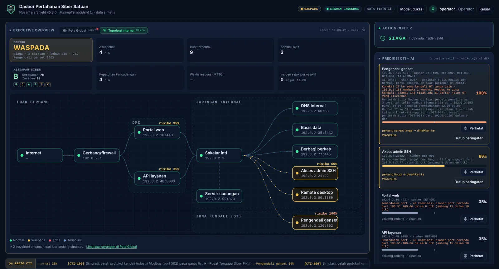
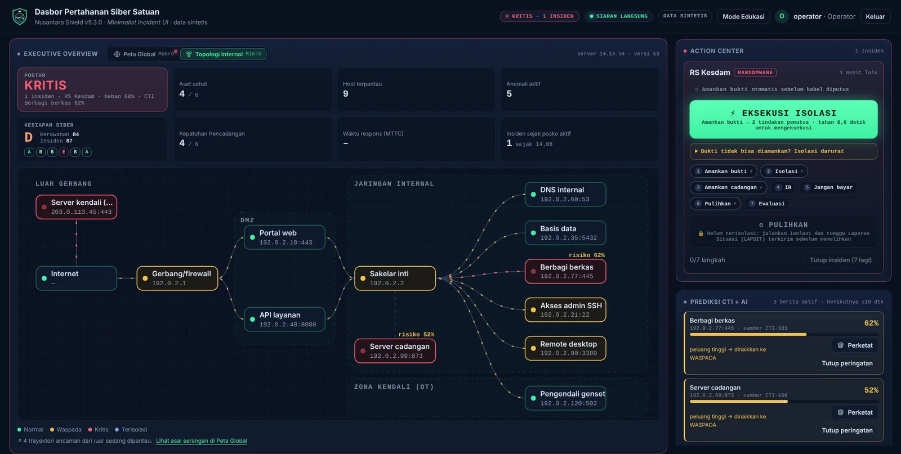
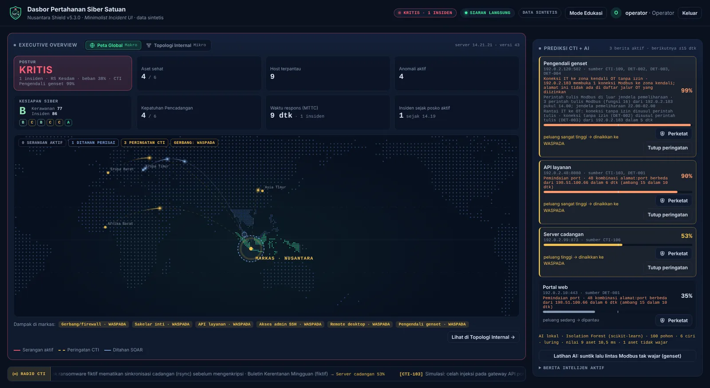
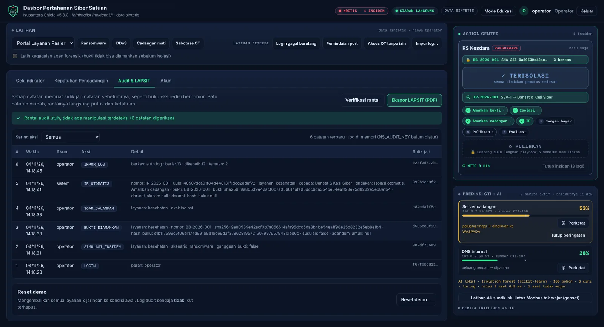
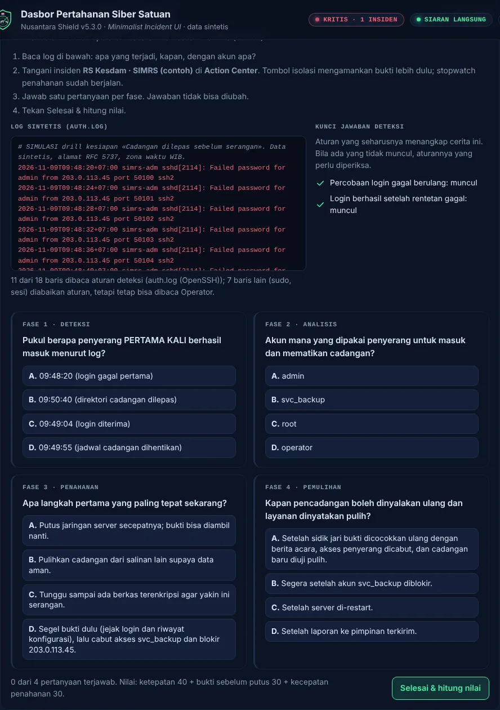
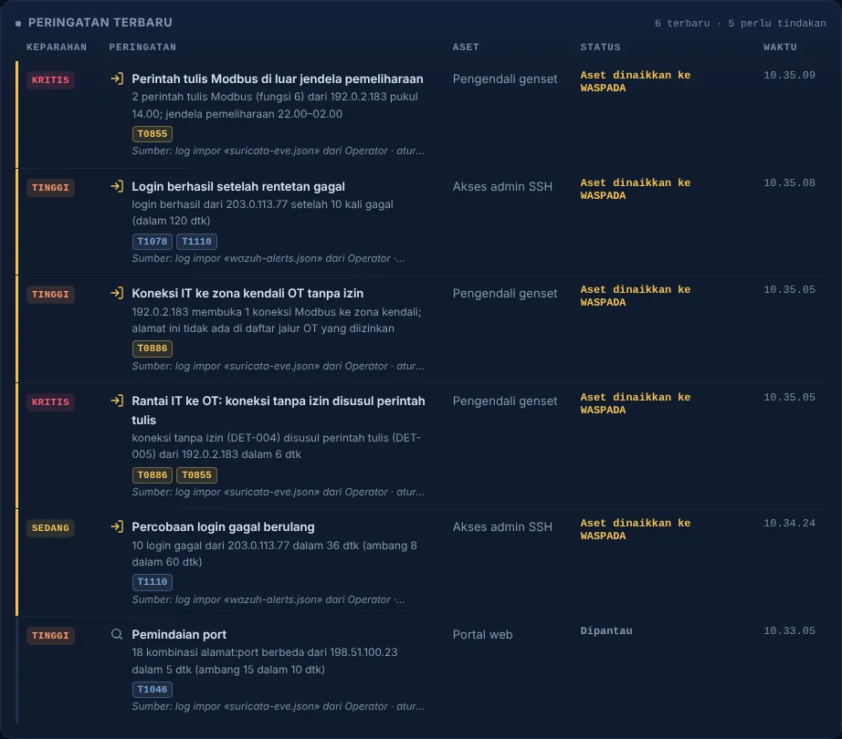

dari upaya mematikan Windows Defender (17 Juni 2024, 23.15 WIB) sampai aktivitas jahat di PDNS (20 Juni, 00.54).
Sumber: kronologi BSSN. Kasus sipil, dipakai sebagai pelajaran.Posko pertahanan siber luring · Kategori 02 Penangkalan
Bukti dulu,
baru putus.
Pertahanan siber untuk aset IT dan OT satuan TNI AD, dari rumah sakit Kesdam sampai genset ruang ICU. Memperingatkan sebelum serangan, memutus jalur penyerang ≈1,2 detik setelah Operator memutuskan, dan tidak pernah menghapus barang bukti.
Mesin mempercepat. Manusia memutuskan.
- Mode
- LURING · TANPA AWAN
- Sasaran contoh
- RS Kesdam · SIMRS · genset
- Sensor
- Wazuh · Suricata (impor)
- AI lokal
- Isolation Forest · siap
- Keputusan isolasi
- Operator · tombol ditahan
- Doktrin
- 5 aturan · 485 uji lulus
00 · Video
Lihat dalam video.
Video baru dimuat dari YouTube setelah tombol ditekan. Halaman ini sendiri tidak memuat apa pun dari luar.
01 · Masalah
Tanda bahaya datang lebih dulu.
Keputusannya yang terlambat.
- Banjir peringatan. Ancaman nyata tenggelam.
- Penahanan ragu. Penyerang leluasa menyebar.
- Bukti terhapus. Server di-restart lebih dulu.
- Jarang berlatih. Petugas jaga bukan ahli.
02 · Doktrin
Lima aturan. Dikunci sistem, bukan dititipkan pada ingatan.
Setiap aturan dijaga uji otomatis yang bisa dijalankan ulang siapa pun. Jumlah uji di kartu adalah hasil ./run_tests.sh versi terbaru.
Tangkal lebih dulu
Kabar ancaman, AI lokal, dan aturan deteksi menaikkan aset ke WASPADA beserta alasannya, sebelum serangan.
135 ujiManusia memutuskan
Hanya Operator yang memerintah isolasi, dengan menahan tombol. Mesin tidak pernah memutus sendiri.
148 ujiBukti dulu, baru putus
Tanpa bukti tersegel, pemutusan ditolak sistem di semua jalur. Pemulihan terkunci sampai sidik jari cocok.
37 ujiJejak tak bisa ditulis ulang
Log audit HMAC berantai, ditambah titik periksa Ed25519 yang diperiksa dengan kunci publik saja. Salinannya disimpan satuan atasan sebagai saksi.
62 ujiLuring dan tepercaya
Berjalan tanpa internet, dipasang dari paket bersidik jari dan bertanda tangan Ed25519.
32 uji03 · Cara kerja
Satu siklus keputusan.
Empat langkah, satu tombol.
- Amati
CTI, AI lokal, aturan deteksi, dan log sensor.
- Orientasi
Aset naik ke WASPADA, lengkap dengan alasan dan teknik ATT&CK.
- Putuskan
Operator menahan tombol 0,6 detik. Pengamat melihat dan mencetak LAPSIT.
- Bertindak
Bukti disegel, jalur diputus, LAPSIT terbit, pemulihan terkunci.
Urutan saat isolasi ditekan
- T+0,0Bukti disegelsalinan + SHA-256 di Buku Rantai Bukti
- T+≈1,2Jalur pertama putustanpa bukti: ditolak sistem
- OTGenset tetap menyalayang diputus jalur kantor ke zona kendali
- tuntasLAPSIT terbithanya setelah semua pemutusan selesai
- pulihPemulihan dibukabila sidik jari bukti cocok ulang
Di purwarupa, pengambilan bukti dan perintah ke sakelar masih simulasi; urutan dan kuncinya dijalankan server sungguhan.
66% → 20%skor heuristik peluang serangan genset, sebelum dan sesudah Perketat
≈1,5% CPUuntuk 300 layar pemantau serentak
≈10 msAI lokal menilai lalu lintas 9 aset
0 bytedata yang perlu keluar ke internet
04 · Layar asli
Bukan mockup. Ini layar yang dijalankan.
127.0.0.1:8000 · Nusantara Shield · data sintetis




05 · Drill Kesiapan
Operator baru dilatih dan dinilai
sebelum insiden datang.
DRL-7F3A21 · hasil · latihan
A90/100
Ketepatan keputusan30/40
Bukti sebelum putus30/30
Kecepatan penahanan30/30
Contoh hasil. Setiap komponen menyebut sumber angkanya: jawaban, Buku Rantai Bukti, dan MTTC.
Nilai dari jejak, bukan pengakuan
Ketepatan 40, bukti sebelum putus 30, kecepatan penahanan 30. Rumus terbuka di app/drill.py.
Kunci jawaban tidak bocor
Tidak dikirim ke browser sebelum pertanyaan dijawab. Satu pertanyaan, sekali jawab.
Drill juga menguji aturan
Log cerita dinilai mesin deteksi yang sama dengan log asli. Aturan yang diam ikut dilaporkan.

Dua skenario siap
Cadangan dilepas sebelum serangan · auth.log · pola awal kasus PDNS
Perintah asing ke pengendali genset · Suricata eve.json · genset tidak dimatikan
Dasar: Perpres 82/2022 Pasal 15. Hasil masuk log audit dan LAPSIT bertanda LATIHAN.
06 · Sensor
Pakai sensor yang sudah ada.
Keputusan tetap di tangan Operator.
ITWazuh
alerts.jsonOTSuricata
eve.jsonServerauth.log · firewall · CSV
→
Impor luringaturan deteksi yang sama, ambang terbuka
→
WASPADAalasan + ATT&CK + nama berkas sumber
→
Operatormenahan tombol isolasi
- Hanya membaca berkas keluaran sensor
- Agregat brute force Wazuh,
sudo, dan FIM tidak dihitung ganda - Jam Modbus dari stempel waktu sensor
- Nama akun tidak disimpan; isi log tidak masuk log audit
- Tidak ada active response atau IPS yang memutus sendiri

07 · Perbandingan
Alatnya sudah ada.
Yang belum ada adalah urutan yang dijaga.
| Kebutuhan satuan | SIEM / IDS | Asisten AI awan | Blokir otomatis penuh | Nusantara Shield |
|---|---|---|---|---|
| Data tetap di satuan | ✓ | ✗ | ✓ | ✓ luring penuh |
| Dipakai Operator non-ahli | ✗ analis senior | sebagian | tak perlu memutuskan | ✓ alasan berbahasa Indonesia, drill |
| Bukti disegel sebelum diputus | ✗ | ✗ | ✗ | ✓ dikunci server |
| Yang memutus jaringan vital | manusia, tanpa urutan | manusia | mesin, bisa terpancing | Operator, setelah bukti aman |
| Jejak tak bisa ditulis ulang | sebagian | ✗ di luar satuan | sebagian | ✓ HMAC + Ed25519 |
| Melatih dan menilai Operator | ✗ | ✗ | ✗ | ✓ Drill Kesiapan |
Perbandingan menurut jenis alat, bukan produk tertentu.
08 · Penerapan
Masuk ke satuan
tanpa mengubah yang sudah ada.
- Pasangsatu server luring di posko siber dari paket bertanda tangan
- Cocokkansidik jari paket dengan berita acara serah terima
- Isiinventaris aset dan jalur OT resmi satuan
- Imporkeluaran Wazuh dan Suricata yang sudah berjalan
- LatihOperator dengan Drill Kesiapan
- Uji cobadi satu rumah sakit Kesdam, lalu perluas
Batas peran. Hanya untuk jaringan dan aset milik TNI AD. Insiden pada instansi sipil, BUMN, atau pemerintah daerah ditangani BSSN, Komdigi, dan Polri.
Batas yang kami akui
- Telemetri langsung dan kabar ancaman masih sintetis. Log asli dan keluaran Wazuh/Suricata masuk lewat impor berkas, belum dialirkan terus-menerus.
- Pengambilan bukti dan perintah ke sakelar jaringan masih simulasi; urutan dan kuncinya sungguhan.
- Salinan memori penuh (memory dump) belum dibangun; rancangannya tiga lapis, baru lapis isolasi darurat yang berjalan.
- Drill baru dua skenario. Perubahan halaman situs satuan dan tabletop exercise untuk pimpinan masih peta jalan.
- Belum diuji di jaringan satuan sungguhan; layanan systemd belum diuji di mesin Ubuntu fisik.
- Saksi Berjenjang Luring hanya melindungi riwayat sampai saksi terakhir yang diserahkan; penyerahannya lewat media fisik, belum otomatis.
- Insiden dari temuan log asli hanya memuat aset yang tercatat di log; aset lain yang tersentuh penyerang tetapi tidak terekam tidak ikut tampil.
09 · Unduh dan periksa
Jangan percaya kami.
Periksa sendiri.
Sidik jari kunci rilis Ed25519 · tidak berubah sejak v5.2.0
00a223f10fe2848df6b5a1fcd016857dd0cfdb8506d9a96efbcb9bb006e5240a| Dokumen | Isi | Berkas · sidik jari SHA-256 |
|---|---|---|
| Proposal Solusi | Masalah, solusi, keunggulan taktis, kelayakan penerapan, peta kriteria penilaian, dan asal setiap angka | PDF · 1,1 MB ba02aa5547da5fb011d05d131c797e8b490c027ee20498d7465717fc97e0f6c3 |
| Dek presentasi | 9 slide yang disajikan ke Dewan Juri (PPTX: tiap slide satu gambar) | PDF · 2,4 MB 17cb3d032d44d36959495b1f3f120806ee6f1f463d7c0cfd9e1034b7bb517c0e PPTX · 2,1 MB 1027d102cd564d99d2d58b2ff2264c4402bd4930d20ff28887ddb4c986d4e075 |
| Dokumentasi Teknis | Arsitektur, aturan deteksi, keamanan posko, SOP respons insiden, Drill Kesiapan, pemasangan, dan uji | PDF · 1,0 MB 614995882c42a9e26b1d24728eff3f538f38f85c52676945f8690930954c1f9a |
| Panduan Belajar | Untuk pembaca non-IT: dari nol sampai bisa menjelaskan sistem ini | PDF · 4,6 MB b78c64010c07b6a642f814e1bab675d4696624af8cc54d3760a88dff8fad76a0 |
| Poster | Satu halaman A4 | PDF · 476 KB af90877de74cd7df5572d296c98b0a8371d0cd2f672590c5cdd1379dbc035d80 |
| Contoh LAPSIT (insiden) | Laporan situasi yang dicetak sistem saat insiden ditangani | PDF · 17 KB 608da0fe2aba0389599ab193133995a41a3f6c6508fa8279fbe73630255b55b1 |
| Contoh LAPSIT (rutin) | Laporan situasi saat kondisi normal | PDF · 7 KB e8e39c8f50d046b05a330f529a9cfc302c1ba07433deb090aa24d4dada8f398c |
| Contoh log | auth.log, firewall, CSV, Wazuh alerts.json, dan Suricata eve.json (sintetis) untuk mencoba fitur impor | ZIP · 5 KB a7d74e57f5924ce3fb8cc849b02a1cd32dd118978f1379d31809cfe0ffe2beb4 |
| Paket pemasangan | Ubuntu 24.04 bertanda tangan (luring), Mac Apple Silicon (luring), dan zip kode bersih, beserta sidik jari untuk berita acara | Halaman rilis terbaru di GitHub |
terminal · tiga perintah untuk juri
# 1. Jalankan seluruh uji (≈60 detik); ringkasannya per aturan doktrin git clone https://github.com/pisangsisir/Nusantara-Shield && cd Nusantara-Shield python3 -m venv .venv && . .venv/bin/activate && pip install -r requirements.txt ./run_tests.sh # 2. Nyalakan dasbor (sandi awal dicetak di terminal), buka http://127.0.0.1:8000 python -m uvicorn app.main:app --host 127.0.0.1 --port 8000 # 3. Paket Ubuntu: periksa tanda tangan sebelum memasang (lengkap di BACA-SAYA.txt) openssl pkey -pubin -in kunci-publik-rilis.pem -outform DER | sha256sum openssl pkeyutl -verify -pubin -inkey kunci-publik-rilis.pem -rawin -in SHA256SUMS -sigfile SHA256SUMS.sig
10 · Tanya jawab
Pertanyaan yang biasa diajukan.
Kenapa tidak otomatis penuh, seperti blokir otomatis?
Di jaringan vital, respons otomatis penuh membuka tiga risiko: alarm keliru yang memutus layanan sendiri, respons yang bisa dipancing pihak luar, dan pemutusan tanpa pejabat yang bertanggung jawab. Kecepatannya tidak hilang: isolasi cukup ditahan 0,6 detik, dan jalur pertama putus ≈1,2 detik kemudian dengan bukti sudah tersegel.
Apakah memakai AI? Di mana datanya diolah?
Ya, AI lokal (Isolation Forest, scikit-learn) dilatih dan dijalankan di server satuan, tanpa internet. Ia menilai lalu lintas tiap aset dan menyebut alasannya, misalnya "perintah tulis Modbus 10× normal". Hasilnya hanya menaikkan WASPADA.
Bagaimana bila bukti gagal diambil saat serangan berlangsung?
Operator memakai Isolasi Darurat: alasan wajib ditulis (minimal 15 karakter) dan tombol ditahan 1,5 detik. Alasan itu tercatat permanen di Buku Rantai Bukti, log audit, dan LAPSIT. Bukti diamankan susulan sebelum pemulihan dibuka.
Bagaimana juri memastikan angka di sini tidak dikarang?
Setiap angka punya alamat: rumusnya terbuka di kode, dikunci uji otomatis, dan asal tiap angka tercatat di Proposal §7.2. Uji bisa dijalankan ulang dengan ./run_tests.sh, dan log audit bisa diverifikasi tanpa server.
Bisakah dipasang di jaringan tanpa internet sama sekali?
Bisa. Paket Ubuntu 24.04 membawa semua pustaka, ditandatangani Ed25519, dan diperiksa sebelum diekstrak. Paket itu sudah diuji dipasang sebagai root dengan jaringan diputus; seluruh uji lulus di mesin yang sama.